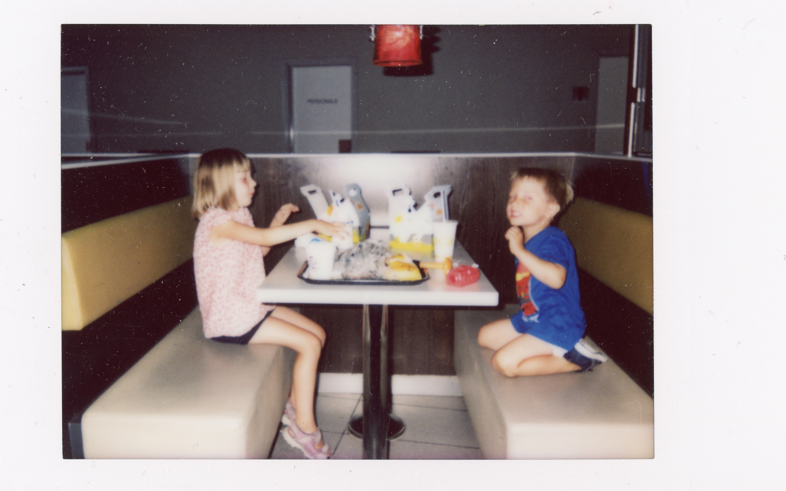
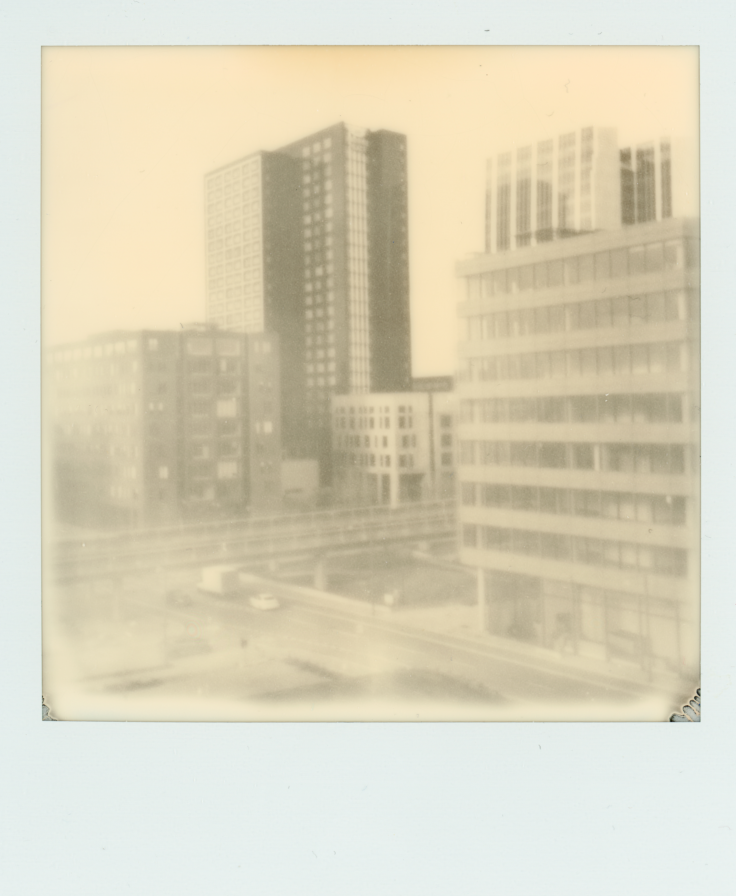

Amager Forbrænding
Jeg ville give min højre arm for en smøg. Taget med et Lomomatic Square.
Instant
ugen
Taget af Steffen Grage
Et lille snapshot fra Amager Fælled, en stor skov i den sydvestlige del af København, Danmark. Taget med et Lomomatic Square.

Jeg ville give min højre arm for en smøg. Taget med et Lomomatic Square.

Fra denne vinkel ligner København en storby. Taget med et Polaroid Now+ Gen 2, med et gult filter.

Et tilfældigt billede fra Burger King. Som det fremgår, ville den yngste ikke dele sit Happy Meal. Taget med et Instax Mini.

En dobbelteksponering fra mit nabolag, Ørestad. Taget med et Lomomatic Square.

For koldt til at tage en dukkert. Så jeg tog et billede i stedet. Polaroidet gav et forfærdeligt magenta farveskær, men jeg endte med at kunne lide det.

Jeg ville fange den nye bydel, Ørestad, i en bedste retro-stil. Så jeg brugte et Polaroid Now+ gen 2 på et stativ med en i-Type sort-hvid film.

Den smukke natur i en tidligere kalkgrav med et twist af kaffe. Polaroidet blev lagt i blød i kaffe i et par uger.

Amager Strand, København. Lokalt omtalt som Københavns mini-Manhattan. Lang eksponering med Polaroid Now+ gen 2.

Amager Strand ligger tæt på havet. Så jeg ville give dette polaroidkamera et twist af vand. Polaroidkameraet blev lagt i blød i vand i omkring tre uger.